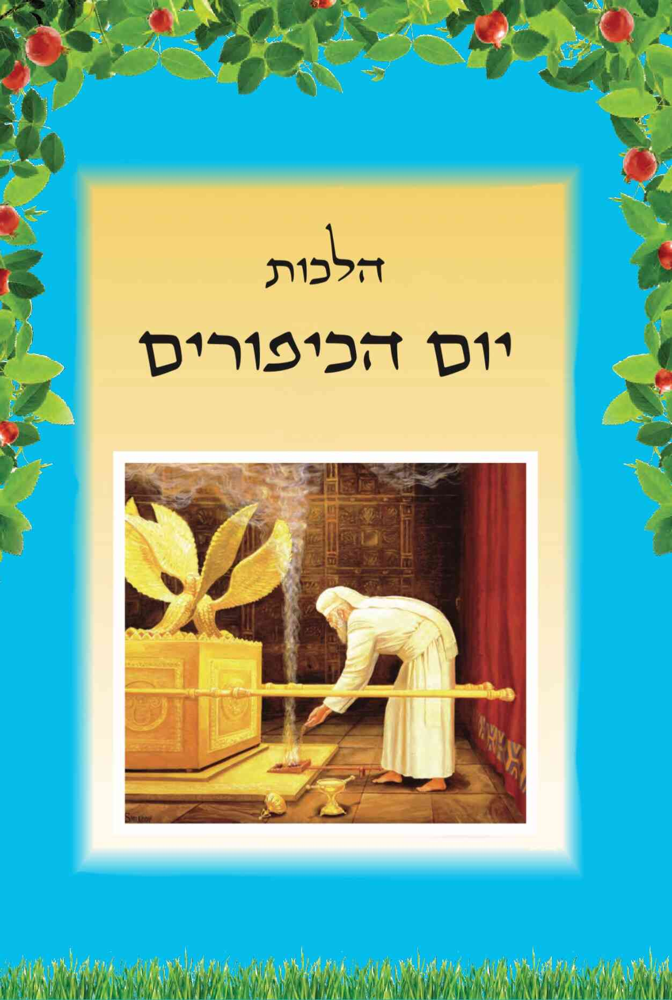

א. בראש חודש אלול עלה משה רבינו להר סיני לקבל את שני לוחות הברית בפעם השניה (לאחר ששיבר את הלוחות הראשונים), ושהה שם ארבעים יום. בסופם, ביום הכיפורים, התרצה הקדוש ברוך הוא לישראל, סלח להם על חטא העגל, וירד משה מן ההר עם הלוחות השניים. וכיוון שהתשובה בימים אלה מקובלת ורצויה יותר מבשאר ימות השנה, נהגו ישראל להרבות בהם בתשובה, בתפילות ובתחנונים [פרקי דרבי אליעזר (פמ"ו). תנא דבי אליהו – זוטא (פ"ד), מדרש רבי תנחומא (“כי תשא" פל"א). רש"י בדברים (ט', יח) ועוד. ראה שם שיש שלוש דעות מתי עלה משה רבנו להר: כ"ט אב. ל' אב. א' אלול. ראה במקראי קודש הלכות ראש השנה (פרק א' סעיף א') והלכות יום הכיפורים (ריש פרק א’)].
ב. מיום א' באלול עד יום כ"ח באלול נוהגים האשכנזים לתקוע בשופר [תמונה 1] אחר תפילת שחרית כדי לעורר את העם לתשובה, ומעוד טעמים. ובמשך כל חודש אלול ואילך, מוסיפים הם לומר בסיום התפילה את המזמור "לדוד, ה' אורי וישעי". יש אומרים אותו בשחרית ובמנחה, ויש בשחרית ובערבית. ואילו הספרדים תוקעים בשופר בסליחות בעת אמירת שלוש עשרה מידות. ויש מהם התוקעים רק בסוף הסליחות, בעת אמירת קדיש "תתקבל". ומכל מקום התוקעים בשופר בסליחות בשעות הלילה יזהרו לא להעיר את השכנים הגרים סמוך לבית הכנסת, ובפרט שלא יעירו את התינוקות [א,ב].

ג. מיום ב' באלול ועד יום הכיפורים נהגו הספרדים להשכים ולומר סליחות ותחנונים. ואילו האשכנזים מתחילים לומר סליחות רק מיום ראשון בשבוע שחל בו ראש השנה. ואם ראש השנה חל ביום שני או שלישי בשבוע, מתחילים הם לומר סליחות מיום ראשון בשבוע שלפניו [א,ג].
ד. יש לומר את הסליחות במתינות ובנחת, לפחות כמו אדם המבקש סליחה מחבירו. ולכן עדיף לומר חלק מהסליחות בכוונה ולאט, מאשר לומר את כולן במהירות ובלא כוונה. ומכל מקום ברור שהטוב ביותר לומר את כל הסליחות, בכוונה ובמתינות [א,ד].
ה. הזמן הטוב ביותר לומר סליחות הינו משעת חצות הלילה (לפי השעון היהודי ההלכתי, והוא בערך בשתים עשרה וחצי בשעון קיץ. ולא לפי השעון הנוצרי, כפי שאומרים בחדשות ברדיו, שאצלם זה תמיד בשעה שתים עשרה. כי הבודק מתי חצות היום, שהוא אמצע הזמן בין הזריחה לשקיעה, או בין עלות השחר לצאת הכוכבים, יראה שזה לא בשעה שתים עשרה) עד עלות השחר. ואם אינם יכולים לומר בזמן זה, יאמרו אותן לפני תפילת שחרית (אך לא יאחרו את זמן קריאת שמע ותפילה בשל כך). וכן יכולים לאומרן סמוך ולפני תפילת מנחה, ואם לאו אז יאמרו אותן בשאר שעות היום. ומכל מקום לדעת הרוב המכריע של הפוסקים לא יאמרו את הסליחות בחצי הלילה הראשון, ויש פוסק אחד שמתיר זאת [ב,ה].
ו. מי שזמנו דחוק, ואינו יכול להספיק לומר גם סליחות וגם תיקון חצות. לספרדים יאמר תיקון חצות, ואילו הפוסקים האשכנזים נחלקו מה מהם עדיף [א,ו].
ז. המשכים לאמירת הסליחות יתאמץ שלא להרדם בתפילת שחרית, ובמיוחד בעת קריאת ְבתפילין, ואסור להרדם עם שמע וברכותיה ובתפילת שמונה עשרה, ובפרט שהוא לבוש תפילין. ואם נרדם בתפילה, יצא שכרו בהפסדו. כלל זה נקוט בידינו: יש לשמור על העיקר ולהוסיף חסידות, ולא לפגוע בעיקר ולקיים את התוספת [א,ז].
ח. יש לכוון במיוחד בעת אמירת שלוש עשרה מידות (היינו בפסוק: "ה' , ה' א-ל רחום וחנון" וגו'). ויש להפסיק מעט בין אמירת שם השם הראשון לשם השני [א,יא].
ט. אם בתחילת הסליחות לא היה מנין אנשים, רשאים להתחיל לאומרן בלא הקדיש שבתחילתן, ולכשיהיה מנין יאמרו את הקדיש. ויש אומרים שבמקרה זה יאמרו לפני הקדיש שלושה פסוקים כלשהם [א,יב].
י. האומרים סליחות שלא במנין, אינם רשאים לומר את שלוש עשרה המידות. וישנן שלוש דעות כיצד לנהוג במקרה זה: 1) יש אומרים שיקרא אותן בטעמי המקרא, כדרך קריאה ולא כדרך תפילה ותחנונים. וכן נוהגים למעשה האשכנזים וחלק מהספרדים. 2) יש מהספרדים שאומרים שבמקרה כזה לא יאמרו כלל שלוש עשרה מידות בסליחות. 3) ויש אומרים שאם החלו לומר את הסליחות כשאין עדיין מנין, ועתיד להיות מנין, ידלגו על קטעי "א-ל מלך יושב" (או "א-ל ארך אפיים”) ושלוש עשרה מידות (כולל קטעי "רחמנא", "אנשי אמונה אבדו", ו"תמהנו מרעות" – לספרדים), ולכשיהיה מנין יחזרו וישלימו אותם. ונראה שזו הדרך המועדפת [א,יג].
יא. כאשר אין מנין אין לומר גם את הסליחות הכתובות בלשון ארמית. לכן אם בתחילת הסליחות לא היה מנין, ידלגו על הסליחות הנאמרות בארמית, ולכשיהיה מנין יחזרו וישלימו אותן. ויש מהספרדים המתירים לומר את הסליחות הללו אף כשאין מנין [א,יד].
יב. אם בעת הסליחות היה מנין, ולקראת הסוף יצאו כמה מהם ולא נשאר מנין, האשכנזים יכולים לומר את קדיש "תתקבל" שבסוף הסליחות, אם נשארו לפחות ששה בני מצוות. והספרדים לא יאמרו קדיש "תתקבל" במקרה כזה שאין מנין [א,טו].
יג. יש לדקדק במה שאומרים בסליחות, שלא יהיו כדוברי שקרים. ולכן למנהג הספרדים אין לומר "חצות לילה לך קמו" אם באמת לא קמו לסליחות בחצות, אלא יאמרו: "חצות לילה לך באו" (אם היו ערים עד חצות) או שיאמרו "אחר חצות לך קמו" (אם קמו לאחר חצות). וכן לגבי נוסחאות האשכנזים, כגון אשכנזים אומרים את הסליחות לאחר עלות השחר, לא יאמרו "בזעקם בעוד ליל". וכן יש לנהוג בשאר הדברים בסליחות [א,טז].
יד. מי שמכל סיבה שהיא אינו יכול לומר את כל הסליחות: עדיף שיאמר את הוידוי וקטעי "א-ל מלך יושב" עם שלוש עשרה המידות (עפ"י המבואר בסעיף י'), עם הפסקאות שבין קטעי "א-ל מלך יושב". ואם יש לו עוד זמן יאמר גם נפילת אפיים. ואם נותר לו עוד זמן יאמר גם את הבקשות [א,יז].
טו. לגבי התפילות, נחלקו הפוסקים כיצד ינהג אדם בתפילותיו כשמתפלל במקום שמתפללים שלא כנוסח אבותיו. וישנן שלוש דעות בדבר: 1) יש אומרים שלא ישנה ממנהג המקום אלא יתפלל כמותם. 2) יש אומרים שרק שליח הציבור צריך להתפלל כמנהג המקום, ואילו שאר המתפללים יתפללו בצנעה כמנהג אבותיהם, ובדברים גלויים יתפללו כמנהג המקום. 3) יש אומרים שרק שליח הציבור ינהג כמנהג המקום, ושאר המתפללים יתפללו בכל דבר כמנהג אבותיהם. ולמעשה: הדעה השלישית הינה הדעה העיקרית לספרדים. ומנהג האשכנזים שנוי במחלוקת שלוש הדעות. ומכל מקום לגבי הסליחות, ברור שכל אחד יכול להתפלל כמנהג עדתו [א,יח].
טז. אין איסור לאכול לפני הסליחות. ומכל מקום על המשכימים לסליחות לדעת שמזמן עלות השחר אסור לאכול או לשתות עד לאחר תפילת שמונה עשרה (היינו שהאיסור הינו מצד תפילת שחרית ולא מצד הסליחות. ולכן הדבר אמור אף לגבי תפילות שחרית של כל ימות השנה). מעיקר הדין מותר לפני התפילה לשתות רק מים או תרופות, וכן תה או קפה ללא סוכר וחלב. אלא שבדורנו קשה לאנשים להתרכז בתפילה באופן שכזה, ולכן מקילים אף לשתות קפה עם חלב וסוכר. ומי שהינו רעב באופן מיוחד, או חולה, ואף מי שאינו חולה אלא שלבו חלש, רשאי אף לאכול כפי צורכו. וה' יראה ללבב [א,יט]. וראה עוד בסעיף הבא.
יז. לגבי אכילה לפני תפילת שחרית, כתבו הפוסקים להתיר אכילה לנשים בהריון, לנשים מניקות, ולחיילים בפעילות מבצעית (חיובית – לא פעילות שלילית כפינוי ישובים יהודיים), שכל אלה יאכלו וישתו כפי הצורך. ודעת רוב הפוסקים שיש להקל גם לילדים עד גיל מצוות. ומכל מקום דבר זה אמור רק לגבי אכילה לאחר עלות השחר. אך לפני אמירת הסליחות הנאמרות לפני עלות השחר, אין איסור אכילה [א,(כח)].
יח. כפי שכתבנו לעיל (בסעיף ג'), הספרדים נוהגים לומר את הסליחות כבר מתחילת חודש אלול, ואילו האשכנזים מתחילים לומר זאת כשבוע לפני ראש השנה [תמונה 2]. לכן בחורי ישיבות ותלמידי חכמים ספרדים הרגילים לעסוק בתורה עד שעה מאוחרת בלילה, שאם ישכימו לסליחות יהיו עייפים מאוד ויתבטלו מלימודם למחרת היום, ישתדלו לומר סליחות לאחר חצות הלילה, או שלפחות יאמרו סליחות בימי שני וחמישי בחודש אלול. ומכל מקום לא יפרשו מהציבור, ולפחות יאמרו סליחות בעשרת ימי תשובה. וכן הדין למלמדי תורה לילדים. ואילו בחורי הישיבות ותלמידי חכמים האשכנזים, כיוון שימי הסליחות למנהגם מועטים הם, לכן צריכים לומר את הסליחות בכל הימים עם שאר העם, או בחצות או בבוקר. וכדי שלא יהיו עייפים ילכו לישון יותר מוקדם. ובמיוחד יזהרו מהעייפות מלמדי תורה לאחרים [א,כא].

יט. כיוון שתפילות הימים הנוראים הינן חשובות ומכריעות לגבי כל השנה (כי בימים אלה נגזרים חייו של האדם, בריאותו, פרנסתו, נישואיו, ילדיו וכדומה), ושליח הציבור הינו המייצג את הציבור בפני הבורא יתברך, לכן יש לדקדק ששליח הציבור בפרט בסליחות ובימים הנוראים יהיה האדם היותר הגון והיותר גדול ביראת שמים, בתורה ובמעשים טובים, כפי שניתן למצוא. וכן רצוי שיהיה נשוי ומעל גיל שלושים. ובכל אופן ירא חטא ובן תורה עדיף על מי שאינו כזה, אפילו שהשני נשוי ומעל גיל שלושים [א,כב].
כ. יש להקפיד ששליח הציבור יהא אדם המקובל על הציבור ושאינו בעל עבירות. והיינו שאינו עובר על איסורים מהתורה שחומרתם ידועה, כגון מי שפרוץ בעריות (למשל שהולך להתרחץ בים מעורב, שמתרחצים בו גברים ונשים יחדיו. או מסתכל בסרטים לא צנועים), וכן מי שמתגלח בסכין גילוח, ועוד דברים דומים [כמבואר במקראי קודש הלכות ראש השנה (בנספח ח'. ובפרק א' סעיף כ"ג)].
כא. אין לעשות מחלוקת ומריבה בענין מי שיעלה שליח ציבור. ורצוי שהגבאי המעלה את שליחי הציבור יתייעץ עם רב פוסק [א,כד].
כב. למנהג האשכנזים שליח הציבור מתעטף בטלית. ואם אומרים את הסליחות לפני שהגיע זמן מצוות ציצית בבוקר, יתעטף הש"ץ בטלית של אחד מאנשי הקהל, ולא בטלית של הציבור או בטלית שלו. ויתעטף בה אז בלי ברכה ואם כבר הגיע זמן מצוות ציצית יתעטף בטלית שלו ואף יברך עליה [א,כה].
כג. הדבר ברור שמותר ששליח הציבור שבסליחות ישמיע את התפילה דרך מיקרופון. וכן ראינו שגדולים בדורנו (כג"ר עובדיה יוסף זצ"ל והג"ר ראובן אלבז שליט"א) היו שליחי ציבור בסליחות והשמיעו את תפילתם דרך מיקרופון. והדברים אמורים לגבי כל התפילות, בדברים שהציבור לא יוצא ידי חובה בשמיעה משליח הציבור. אך בדברים שהציבור יוצא ידי חובה מהקורא, כגון בקריאת מגילת אסתר, מי שאינו קרוב לקורא באופן שיכול לשומעו ללא הרמקול, אינו יוצא ידי חובה [כך פסקו לגבי קריאת המגילה וכדומה הג"ר שלמה זלמן אוירבך זצ"ל במנח"ש (ח"א סי' ט' ססק"א). הג"ר עובדיה יוסף זצ"ל ביבי"א (ח"א סי' י"ג) ועוד. וכן עיקר להלכה. ראה מקראי קודש הלכות ראש השנה (פרק י' הערה א’)].
כד. מצווה לבדוק את התפילין והמזוזות בחודש אלול [תמונה 3], אך אין חובה לבודקם כל שנה. ואדרבא, בדיקתם כל שנה (בפרט תפילין) עלולה להזיק להם [א,לג].
כה. במיוחד בימי אלול ראוי להרבות בלימוד תורה, ובפרט ללמוד בספרי מוסר, כמסילת ישרים, אורות התשובה וכדומה. וכן נוהגים בימים הוצאת פרשיות התפילין לצורך בדיקתן אלה להרבות בצדקה, ולתקן כל אחד את מעשיו (וכל אחד יודע בעצמו מה הוא צריך לתקן. אדם אחד צריך להתחזק לקום בבוקר ולהגיע לתפילה בזמן. והשני לא לצאת מהתפלה לפני הזמן. ואחר צריך להתחזק בשמירת שבת. ורביעי צריך לא להתלוצץ על אחרים. וחמישי יתחזק שלא לגנוב את דעת הבריות. וכן הלאה וכן הלאה. ובפרט מנהיגי הציבור צריכים להתחזק בהשפעתם לחיזוק הקשר בין הציבור לבין אבינו שבשמים). וכבר אמרו חכמינו זכרונם לברכה, שאם אדם פותח פתח קטן בתשובה, ואפילו פתח קטן כחוד המחט, אזי הקדוש ברוך הוא פותח לו פתח ענק כפתחו של אולם, ומקרבו אליו, ונותן לו שפע רב.

א. בערב ראש השנה, או קודם לכן, מכבסים את הבגדים לכבוד ראש השנה. וכן מצווה להסתפר, להתגלח (למתגלחים בשאר ימות השנה, וכמובן באופן המותר) ולגזוז את הציפורניים לכבוד היום הקדוש [ב,א].
ב. נוהגים לעשות "התרת נדרים" בערב ראש השנה [תמונה 4]. למנהג הספרדים עושים התרת נדרים זו לכתחילה בפני עשרה, ואם לא ניתן הדבר עושים זאת בפני שלושה. והאשכנזים מתירים לכתחילה את הנדרים בפני שלושה אנשים [ב,ב].

ג. מותר לעשות התרת נדרים זו גם בלילה. מותר ששני קרובי משפחה (כאב ובנו, או שני אחים) ישמשו באותו הרכב כדיינים. וכן מותר ששני קרובי משפחה יהיו באותה התרת נדרים, אחד כמתיר והשני שמתירים לו. רוב רובם של האשכנזים נוהגים שאין נשים עושות התרת נדרים זו, וסומכות הן על אמירת "כל נדרי" בליל יום הכיפורים. ואילו הנשים הספרדיות משתדלות לעשות התרת נדרים זו. מיעוטן מגיעות להתרת נדרים זו, וחלקן ממנות את בעליהן כשליח שיאמרו למתירים שיתירו גם להן. ומינוי הבעל מועיל רק לאשה הממנה את בעלה. אך אין האב יכול להיות שליח להתרת נדרי בניו או בנותיו וכדומה [כל זה מפרק ב' הערה ג' עפ"י הפוסקים].
ד. לכתחילה אין לסמוך על התרת נדרים זו של ערב ראש השנה לגבי נדרים שיודע שנדר, כיוון שישנן בה כמה בעיות הלכתיות [שם].
ה. אין תוקעים בשופר בערב ראש השנה כבר מהלילה. ומכל מקום לצורך ראש השנה עצמו (כגון ללמוד לתקוע בשופר, או לבדוק את השופר) מותר לתקוע אז בחדר סגור [ו,ב].
ו. אין נופלים אפיים בתפילות ערב ראש השנה, חוץ מהסליחות הנאמרות ביום זה שבהן נופלים אפיים אף לאחר עלות השחר. לספרדים נופלים אפיים עד הנץ החמה, ולאשכנזים אף לאחר מכן [ב,ז].
ז. נהגו ישראל לטבול במקווה טהרה [כבתמונה 5] או במעיין בערב ראש השנה, ואין מברכים על טבילה זו. ומכל מקום אין הנשים נוהגות לטבול טבילה זו [ב,ט,יב].

ח. פירוט ההכנות לטבילת נשים, כשראש השנה חל בימי חמישי ושישי או ביום שבת ויום ראשון, כשזמן טבילתה של האשה הינו בליל יום טוב ראשון או בליל יום טוב שני,או בליל שבת, ראה מה שכתבנו בס"ד במקראי קודש הלכות ראש השנה (פרק ב' הערה ט"ז).
ט. כאשר ראש השנה חל בימי חמישי וששי, ורוצה הוא להכין מיום טוב לשבת, יש לעשות עירוב תבשילין [תמונה 6], ככתוב במחזורים ובסידורים. ויש לזכור שעירוב תבשילין מתיר לעשות מלאכות מסוימות רק מיום ששי לשבת, ולא מיום חמישי לצורך יום ששי או לצורך השבת [ב,יג].

י. הנשים מדליקות את הנרות לכבוד ראש השנה. ואם אין אשה שמדליקה, ידליק האיש [.יד,ב].
יא. יש המדליקות את הנרות של יום טוב הראשון לפני כניסת החג, ויש המדליקות לאחר כניסתו. ואילו את הנרות של יום טוב שני, צריך להדליק רק לאחר צאת הכוכבים בליל יום טוב שני [ב,יד].
יב. כאשר חל יום טוב ראשון של ראש השנה בשבת, יש להדליק את נרות השבת והחג של יום טוב הראשון לפני כניסת השבת [כבתמונה 7]. ובמקרה זה מדליקים את הנרות של היום טוב השני רק לאחר יציאת השבת [כבתמונה 8], וזאת לאחר שהאשה אמרה את המילים: "ברוך המבדיל בין קודש לקודש" (בלי לומר שם שמים), או שהתפללה ערבית ואמרה "ותודיענו" וכו' [ב,טו]. ותנהג כדלקמן בסעיף ט"ו [כבתמונות 9,10,11].


יג. נוסח ברכת הדלקת הנרות של יום טוב הוא: "ברוך... אשר קידשנו במצוותיו וציוונו להדליק נר של יום טוב". וכשראש השנה חל בשבת, האשכנזים מסיימים במילים "להדליק נר של שבת ושל יום טוב", והספרדים מסיימים במילים "של שבת ויום טוב" [ב,יז].
יד. בשני ימי ראש השנה (וכן בשבועות, וביום טוב הראשון של פסח וסוכות) יש נשים שנהגו להוסיף ולברך בעת הדלקת הנרות גם את ברכת "שהחיינו", ויש הנמנעות מכך. וכל אשה תעשה כמנהג משפחת בעלה. ויש לדעת שאשה המברכת ברכה זו בעת הדלקת הנרות מקבלת היא על ידי כך את קדושת החג, וחלים עליה איסורי המלאכה של יום טוב. ובמקרה זה לא מועיל שתתנה שאינה מקבלת עדיין את החג. וראה לקמן (בפרק ד' סעיף ג') האם המברכות ברכה זו בעת ההדלקה תענינה "אמן" עליה בזמן הקידוש [ב,יח].
טו. כאשר מדליקה האשה את הנרות לאחר כניסת החג (ביום טוב הראשון, ובוודאי ביום טוב השני), צריכה היא להדליק את הנרות מאש שכבר קיימת (שהרי אסור להדליק אש ביום טוב, אלא מותר רק להעביר אש מאש שכבר הודלקה לפני החג, או מאש שהודלקה ממנה), ותנהג כדלעיל [בתמונות 10, 11] וכיוון שאסור לכבות את האש, הרי שעדיף להדליק את הנרות על ידי גפרור שהודלק מאש קיימת, ותניחנו בעדינות (על השיש וכדומה) כדי שיכבה מאליו [ב,יט].
טז. אסור בחג להבהב את הפתילה, וכן אסור לחמם את נרות השעווה בתחתיתם או לשפשפם על מנת להדביקם לפמוטים, אלא יש להכין זאת לפני כניסת החג. ואם שכחו ולא עשו זאת לפני החג, ישימו את הנרות בפמוטים כשדבר מה חוצץ בין הנרות לפמוטים כדי שיסמכו עליו, ויעמדו. ומותר לצורך זה לנקות את הפמוטים משאריות הנרות הקודמים [ב,כ].
יז. רצוי לפתוח לפני החג את הבקבוקים, קופסאות השימורים, השקיות הסגורות וכדומה, אותם שיצטרך להשתמש בהם ביום טוב [ב,(לב)].
א. טרם התקדש החג לובשים בגדי חג (אך לא בגדים מפוארים מדי, כבגדי משי ורקמה, כדי שיהיה מורא הדין על האדם), ובתחילת הלילה מתפללים את תפילת ערבית בנעימה [ג, א].
ב. את תפילות ראש השנה יש להתפלל ביראה ובהכנעה יותר משאר ימות השנה, כיוון שראש השנה הינו יום הדין הגדול לכל ברואי עולם [תמונה 12]. ספרי החיים והמתים פתוחים בו, וביום זה נגזר מה יהיה על האדם באותה השנה: אם יחיה או ימות: אם יהיה בריא או חולה. אם יוולדו לו עוד צאצאים. אם יהיה עשיר או עני. אם יחיה בנחת או בצער. וכן שאר הדברים. ואמר הג"ר אביגדֹר נבנצל שליט"א, שבמקום להתפלל במשך השנה להחייאתו ולרפואתו של ילד שנפצע קשה בתאונת דרכים, יתפללו בכוונה בראש השנה, וכך התאונה כלל לא תהיה. לכן יש להתחזק בתפילות בעיקר ביום זה, כי הוא יום גורלי לכל שאר ימות השנה. וראה עוד לקמן (בפרקנו סעיף כ''א).

ג. לפני תפילת ערבית נוהגים הספרדים וחלק מהאשכנזים לומר את הפיוט "אחות קטנה", שבו מזכירים שתכלה שנה וקללותיה, ושתחל שנה וברכותיה, ולאחר מכן ממשיכים כולם את תפילת ערבית עם ברכות קריאת שמע, קריאת שמע ותפילת העמידה [ג,א,ב].
ד. מליל יום טוב ראשון של ראש השנה, ובמשך כל עשרת ימי תשובה, ישנם כמה שינויים בתפילת העמידה, שתי ברכות (“הא-ל הקדוש" ו"מלך אוהב צדקה ומשפט”) משתנות בסיומן, וישנן עוד ארבע תוספות, כמבואר בס"ד לקמן [ג,ג].
ה. מתפילת ערבית זו ובמשך כל עשרת ימי תשובה, אין מסיימים את הברכה השלישית במילים "הא-ל הקדוש", אלא מסיימים אותה במילים "המלך הקדוש", כשבראש השנה (וביום הכיפורים) מוסיפים בברכה זו עוד קטעים, כ"ובכן תן פחדך" וכדומה [ג,ג].
ו. מי שטעה בברכה השלישית של תפילת העמידה, ובמקום לסיים במילים "המלך הקדוש" אמר "הא-ל הקדוש". אם יכול להתחיל לתקן זאת תוך 2-3 שניות, וגם לא החל עדיין את הברכה הבאה, יאמר מיד "המלך הקדוש", ויצא ידי חובה. אך אם תיקן זאת לאחר זמן זה, או אפילו בתוך זמן זה אך כבר החל את הברכה הבאה, לא יצא ידי חובה, וצריך לחזור לתחילת תפילת העמידה [ג,ד]. וראה עוד בסעיף הבא.
ז. מי שאינו זוכר אם סיים כראוי במילים "המלך הקדוש", או שטעה וסיים כהרגלו בשאר ימות השנה, דינו כמי שטעה, וינהג כנ"ל. ומכל מקום אם לא התפלל בעל פה אלא מתוך מחזור, ולפני סיום הברכה במילים "ברוך אתה ה''' אמר "ובכן תן פחדך" ושאר סדר התפילה, ורק לגבי סיום הברכה השלישית מסופק הוא אם סיימה כראוי, יצא ידי חובה ואינו צריך לחזור [ג,ה].
ח. כפי שאמרנו, נוסף לשינויים הנ"ל ישנן בימים אלה בתפילת העמידה גם כמה תוספות. בסוף הברכה הראשונה מוסיפים לומר "זכרנו לחיים" וכו'. בסוף הברכה השניה מוסיפים לומר "מי כמוך" וכו'. באמצע ברכת "מודים" מוסיפים "וכתוב לחיים טובים" וכו, ובסיום הברכה האחרונה מוסיפים לומר "בספר חיים ברכה ושלום" [ג,ו]. ט. מי שטעה ולא אמר אחת או כמה מתוספות אלה, אם עדיין לא הזכיר את שם ה' בסיום הברכה שבה מוסיפים את אותה תוספת, יחזור ויתפלל כראוי ממקום שבו טעה. אך אם נזכר בכך לאחר שאמר את שם ה' בסיום אותה ברכה שטעה בה, ימשיך בתפילתו ויצא בדיעבד ידי חובה. ורצוי שבסוף "אלקי, נצור", לפני הפסוק "יהיו לרצון", יאמר את התוספות ששכח לאומרן [ג,ז].
י. כמו כן נוהגים בראש השנה (ובכל עשרת ימי תשובה) לומר בסוף תפילת העמידה "עושה השלום במרומיו" (בתוספת האות ה"א). נוסף לכך האשכנזים אומרים זאת גם בכל הקדישים, ויש מהספרדים שמוסיפים לומר כך בקדיש "תתקבל" של תפילות שחרית ומנחה בלבד [ג,ט].
יא. מי שאמר "יעלה ויבא" בתפילת ראש השנה כראוי, אך לא התרכז בתפילתו, ומצא את עצמו בסוף ברכת "רצה" או לאחר מכן, ואינו זוכר אם המשיך כפי שצריך (ולומר "אלקינו ואלקי אבותינו", מלוך על כל העולם" וכו') או שטעה והמשיך אחר "יעלה ויבא" את סוף ברכת "רצה", כהרגלו בראש חודש ובחול המועד. כתבו הפוסקים שמסתבר שטעה והתפלל כהרגלו בראש חודש. ולכן אם טרם גמר את תפילת העמידה יחזור לסיום "יעלה ויבא" וימשיך כראוי את תפילתו. ואם כבר סיים את תפילת העמידה, יחזור לתחילת תפילת העמידה. ויש מי שאומר שאם התפלל מתוך המחזור מסתבר שהתפלל כראוי ולא טעה בתפילתו [ג,(כז,9)].
יב. מותר בראש השנה, אפילו אם חל בשבת, להוסיף בקשות פרטיות בתפילה ב"אלקי, נצור". וכן מותר בראש השנה, אפילו אם חל בשבת, לומר "מי שברך" ולהתפלל לרפואת החולים [ג,(כז,סד)].
יג. כאשר ראש השנה חל בשבת אומרים קבלת שבת לפני תפילת ערבית. למנהג רוב העדות מקצרים בקבלת שבת זו. וכל עדה תעשה כמנהגה. ולמנהג כולם אין אומרים את פרק במה מדליקין [ג,יג,יד].
יד. בתפילת העמידה של ערבית זו מזכירים את השבת בברכה האמצעית, ומסיימים אותה במילים: "ברוך... מלך על כל הארץ, מקדש השבת וישראל ויום הזכרון", שפירושו שהקדוש ברוך הוא הממונה מטעם בית הדין הגדול בירושלים מודיע כי נתקדש החודש, והשלוחים יוצאים מיד להודיע זאת לבני הגולה הרחוקים מקדש את השבת, וגם מקדש את ישראל שהם – על ידי קידוש החודש – מקדשים את הזמנים [תמונה 13] לומר מתי חל כל חג וחג, כולל את ראש השנה שהוא יום הזכרון לפני ה' [ג,טו].

טו. נחלקו הפוסקים לגבי הברכה האמצעית של תפילת העמידה, לפני הקטע "קדשנו במצוותיך", האם יש להוסיף את המילים "אלקינו ואלקי אבותינו, רצה נא במנוחתנו", כיוון שבמקורות קדומים, כבגמרא, בגאונים וכמעט בכל הראשונים לא כתובה תוספת זו. ולמעשה האשכנזים כבר מאות שנים אומרים תוספת זו, וימשיכו במנהגם. והספרדים, מן הראוי שלא יאמרו תוספת זו. ומכל מקום ספרדי האומר זאת יש לו על מה לסמוך [ג,(לה,7) ובנספח יא].
טז. מי שבתפילת עמידה זו בשבת לא הזכיר כלל את השבת בברכה הרביעית, או שמסופק אם הזכירה, אזי הדין כך: אם נזכר בכך לאחר שסיים את הברכה הרביעית, אך טרם אמר את הפסוק "יהיו לרצון" שבסוף "אלקי, נצור", יחזור לתחילת הברכה הרביעית. ואם נזכר בכך לאחר שאמר פסוק זה, יחזור להתפלל את כל תפילת העמידה [ג,(לה,לח)].
יז. לאחר תפילת העמידה אומר שליח הציבור ברכה מעין שבע, ובמקום לומר "הא-ל הקדוש שאין כמוהו" יאמר "המלך הקדוש שאין כמוהו". ואם טעה ואמר "הא-ל הקדוש", אזי אם טרם אמר "ברוך אתה ה" ' בסיום הברכה, יחזור לומר כראוי מהמילים "המלך הקדוש שאין כמוהו". ואם כבר אמר "ברוך אתה ה' '' בסיום הברכה, זו מחלוקת אם צריך שליח הציבור לחזור מתחילת ברכה מעין שבע [ג,טז].
יח. כאשר ליל יום טוב שני של ראש השנה חל במוצאי שבת, מוסיפים לומר "ותודיענו" בתפילת העמידה בברכה האמצעית. וכשאומר תוספת זו יש להפסיק מעט בין המילים "מששת ימי המעשה קידשת" לבין המילים "(ו)הבדלת וקידשת את עמך ישראל". ואם שכח לומר את "ותודיענו", במקומה, יאמרנה לפני שסיים את הברכה במילים "ברוך אתה ה'.' ואם גם אז לא אמרה, יאמרנה בסוף "אלקי, נצור". ואם לא אמרה שם, לא יחזור על תפילתו [ג,יח].
יט. מי שבליל יום טוב שחל במוצאי שבת לא אמר "ותודיענו" בתפילה, אסור לו לעשות מלאכות האסורות בשבת והמותרות ביום טוב (כגון העברת אש ממקום למקום כדי להדליק את נרות יום טוב), עד שיקדש, או עד שיאמר את המילים: "ברוך המבדיל בין קודש לקודש". לאחר מכן הוא מותר בעשיית מלאכה, אך לאכול בכל מקרה אסור עד שיאמר כראוי את הקידוש [שם].
כ. האשכנזים נוהגים בעשרת ימי תשובה, ובכללם בימי ראש השנה, לכפול בקדישים את המילה "לעילא". ובמקום לומר "מן כל ברכתא", אומרים הם בימים אלה "מכל ברכתא". והספרדים אינם משנים דברים אלה [ג,יט].
כא. יש אומרים שרצוי לבכות בתפילות ראש השנה, ואם אינו בוכה אין זה סימן טוב. ואחרים אומרים שעדיף דווקא להתפלל תפילות אלה מתוך שמחה ונעימה קדושה. ובכל אופן יש להתפלל את תפילות ראש השנה ביראה ובהכנעה יותר משאר ימות השנה [ג,כא].
כב. לגבי תפילות העמידה (=שמונה עשרה) בכל ימות השנה, אמרו חז''ל שיש להתפלל אותן בלחש, ואמרו דברים חמורים לגבי מי שמשמיע את קולו בהן, וכל שכן אם ממש מתפלל אותן בקול רם. אלא שלגבי התפילות בראש השנה, יש מהפוסקים שהקלו בכך כדי שיוכלו להתפלל יותר בכוונה, כמבואר בסעיף הבא.
כג. בתפילות העמידה של ראש השנה, יש מהאשכנזים הנוהגים להגביה מעט את קולם כדי להתפלל יותר בכוונה, אך גם הם לא יגביהו את קולם יותר מידי. ואילו הספרדים ושאר האשכנזים לא מגביהים כלל את קולם בתפילות אלה יותר מהרגלם. חלקם מתפללים באופן שרק המתפלל שומע את תפילתו, וחלקם מתפללים באופן שאף המתפלל אינו שומע את תפילתו שלו. ומכל מקום לגבי התפילות בשאר ימות השנה הדבר ברור שאין להתפלל אותן בקול רם, אלא לכל היותר ישמיע לאוזניו, או שאפילו הוא עצמו לא ישמע את תפילתו. ואם בשל סיבה כלשהי מתפלל הוא ביחידות, רשאי להגביה את קולו אם הדבר מסייע לו לכוון יותר טוב בתפילה [ג,כב].
כד. לדעת רוב הפוסקים עדיף שבראש השנה (וביום הכיפורים) יהיה שליח ציבור (ותוקע) המקבל שכר, מאשר מי שעושה כן בחינם. ורצוי מאוד שאותו אדם ישמש כש"ץ (ותוקע) גם בחלק מימי החול [מצד קבלת שכר שבת. ג,כג].
כה. בני ישובים קטנים, שכל השנה מתפללים אנשי כל העדות יחד, לפחות בימים הנוראים רצוי שיתפלל כל אחד במנין כפי נוסח עדתו, ובתנאי שיתפלל גם במנין, ושבשל כך לחלק מהעדות לא יחסר מנין, וכן שלא תיגרר בשל כך מחלוקת ומריבה [ג,כה]. ובכל מקרה יעשו כפי הוראת רב המקום. וראה עוד בסעיף הבא.
כו. בחורי ישיבה ספרדים הלומדים בישיבות שנוהגים בהם מנהגי תפילה של אשכנזים, יתפללו בימים הנוראים במנין מיוחד כנוסח אבותיהם. ואם אינם יכולים לארגן מנין לעצמם בישיבה שלהם בימים הנוראים כנוסח הספרדים, עליהם להתפלל יחד עם הוריהם כמנהג אבותיהם הספרדים, ועל ראשי הישיבות לאפשר להם זאת [כל זה כתב בילקוט יוסף (ח"א הלכות תפילה, סעיף ל"ט)]. וראה עוד במקראי קודש (הלכות ראש השנה, ג,כה) שכתבנו, שאם בחור ישיבה ספרדי מעדיף להתפלל בישיבה בה הוא לומד כל השנה, אף על פי שמתפללים שם בנוסח אחר, רשאי הוא להתפלל עם האשכנזים, ויתפלל לפחות את תפילה העמידה כמנהג אבותיו.
א. בעת בוא הבעל מבית הכנסת, טוב שהשלחן יהא כבר ערוך ומכוסה במפה יפה, הנרות דולקים, והאשה תהיה לבושה בבגדי החג שלה. ואם גם היא הולכת לבית הכנסת, טוב שתכין זאת מבעוד יום. ומכל מקום אם בא הבעל מבית הכנסת ולא מצא את הכל מוכן, לא יכעס על כך אפילו בלבו [שהרי כל השנה אין לכעוס, ובפרט בראש השנה. ד,א].
ב. כשחל ראש השנה בשבת, אומרים הספרדים וחלק מהאשכנזים "שלום עליכם" ו"אשת חיל" לפני הקידוש [ד,ב].
ג. לאחר מכן אומרים את הקידוש. יש בו שלוש ברכות: "הגפן", "אשר בחר בנו..." המסתיימת במילים "ברוך... מלך על כל הארץ, מקדש ישראל ויום הזכרון", וברכת "שהחיינו". ולגבי אשה שברכה את ברכת "שהחיינו" בעת הדלקת הנרות, נחלקו הפוסקים אם היא תענה "אמן" על ברכת "שהחיינו" שבקידוש, וכל אשה תנהג כהוראת הרב שלה [ד,ג].
ד. גם בליל יום טוב השני של ראש השנה אומרים בקידוש את ברכת "שהחיינו". ורצוי להניח על השלחן פרי חדש שטרם אכלוהו, או ללבוש לפני הקידוש בגד חדש, כדי שברכת "שהחיינו" תחול גם עליהם (ואז בגמר הקידוש לאחר שטעם מהיין, יברך את ברכת הנהנין על הפרי החדש – "בורא פרי העץ" או "האדמה" – ויאכל ממנו מעט מאוד). ומכל מקום אף אם אין לו דבר חדש, פרי או בגד, יברך "שהחיינו" בקידוש זה [ד,ד].
ה. כשחל ליל ראש השנה בשבת, מזכירים בברכת "אשר בחר בנו" באמצעה ובסופה את השבת. ובמקום לומר "יום תרועה" אומרים "זכרון תרועה", שהרי אין תוקעין ומריעין בשבת בשופר. ויש להשתדל מאוד להזכיר בברכה, ובעיקר בסיומה, את השבת, כיוון שאם שכח להזכירה נתון הדבר למחלוקת אם יצא ידי חובה אפילו בדיעבד [ד,ה,(ט)].
ו. כשליל ראש השנה חל במוצאי שבת, אזי לפני ברכת "שהחיינו" מוסיפים לומר בקידוש את ברכות "מאורי האש" ו"המבדיל בין קודש לקודש" (ולא "בין קודש לחול". כי מבדילים פה בין קדושת השבת לקדושה שונה שהיא של יום טוב) [ד,ז].
ז. בהבדלה זו יש להזהר לא לכבות את נרות ההבדלה. והטוב ביותר הוא לקחת לצורך ההבדלה שני גפרורים, להצמידם, ולהדליקם מנר שכבר דולק, ולאחר ברכת "מאורי האש" יניחו אותם בעדינות במקום שיכבו מעצמם [ד,ז,(יא)].
ח. כמה מדיני טעויות בקידוש זה: מי שטעה בקידוש של ליל ראש השנה שחל במוצאי שבת, ושכח לומר את ברכת "מאורי האש" ואת ברכת "המבדיל", או רק את ברכת "המבדיל", צריך לאחוז את כוס היין בידו, ולברך את הברכות שהחסיר. ואם הוא נמצא עדיין בסעודה, ורגיל הוא לשתות בסעודה, או שכיוון בשעת הקידוש לשתות עוד יין בסעודה, לא יברך על היין. אך אם לאו צריך הוא להוסיף ולברך גם על היין. ואם נזכר בכך לאחר שגמר את סעודתו צריך הוא לברך את ברכת הגפן, וגם את הברכות שהחסיר. ואם החסיר רק את ברכת "מאורי האש", יברך אותה מיד כשנזכר, ואינו צריך לברך אותה כשאוחז כוס יין בידו. וכן ינהג עד עלות השחר. מי שטעה ואמר בקידוש זה "המבדיל בין קודש לחול" במקום לומר "המבדיל בין קודש לקודש", לרוב הפוסקים לא יצא ידי חובה, וצריך לחזור ולברך כראוי. ואם לפחות בפתיחת הברכה או בסיומה אמר כראוי, לא יחזור לברך. מי שטעה ולא אמר בקידוש את ברכת ההבדלה, וגם שכח לומר בתפילת העמידה של ערבית את הקטע שמתחיל ב"ותודיענו", ושתה מיין הקידוש, או שאכל דבר מה, צריך לחזור על תפילת העמידה של ערבית ולאומרה כראוי (עם "ותודיענו”), ושוב לומר את ברכת "המבדיל" שבקידוש כשאוחז את הכוס בידו, ורק אז יאכל וישתה. כל זה על פי ספר שמירת שבת כהלכתה (פרק ס"ב סעיף י"ט ואילך, וסעיפים מ"ג ומ"ד), ומקראי קודש הלכות ליל הסדר (פרק ד' סעיפים ל' ול"א) והלכות ראש השנה (פרק ד' הערה י"ב).
ט. נהגו ישראל להביא לשלחן בסעודות ליל ראש השנה סוגי פירות וירקות לסימן טוב, כדי לומר בקשה המתאימה לשמם ולאוכלם. ויש מהספרדים הנוהגים כן גם בסעודה הראשונה של היום [ד,ח].
י. לשם כך מביאים תמרים [תמונה 14], רימונים, תפוח, רוביא [סוג קטנית הדומה לשעועית לבנה. כבתמונה 15], כרתי (לוף), סילקא (יש נוהגים לקחת תרד. ויש הנוהגים לקחת סלק או עלי סלק), קָרא (דלעת), וראש של כבש, או איל או דג. וכל אחד יעשה כמנהג אבותיו [ד,ח].
יא. ישנם שלושה מנהגים לגבי זמן אכילת "סימנים" אלה: מנהג אחד הינו לאוכלם לאחר הקידוש ולפני נטילת הידים לסעודה. מנהג שני הינו לאכול את ה"סימנים" לאחר שנטלו את הידים ואכלו מעט מהלחם. ומנהג שלישי הינו לאכול את ה"סימנים" לאחר ברכת המזון. והעדיף ביותר הוא כמנהג השני – לאוכלם לאחר שנטלו ידים ואכלו מהפת [ד,ט].
יב. מי שאוכל את הסימנים הללו בתוך הסעודה (כמנהג השני) יברך רק על פירות וירקות שאין רגילים לאוכלם עם לחם. לכן לאחר ברכת "המוציא" יטבלו את הפרוסה בדבש (ויש המטבלים גם במלח), ולאחר שבלע מהלחם יברך על התמרים "בורא פרי העץ" (ויש מהאשכנזים המברכים תחילה על תפוח בדבש), ויכוון לפטור את כל פירות העץ שיאכל. ואם וכל ירקות שאין רגילים לאוכלם עם פת (כגון אבטיח או מלון) יברך עליהם "בורא פרי האדמה", ויכוון לפטור את כל שאר הירקות שיאכל [ד,י].
יג. לאחר שבדק את התמר מתולעים (כדלקמן בסעיף ט"ו), בירך עליו, ובלע ממנו, יאמר: "יהי רצון מלפניך ה' אלקי ואלקי אבותי, שיתמו -(שיגמרו) אויבינו ושונאינו וכל מבקשי רעתנו". ודבר שאין מברכים עליו יאמר את נוסח הבקשה המתאים לו ויאכל ממנו. ויש נוהגים להקדים את הבקשה לפני הברכה (על דבר שצריך לברך). וכל אחד יעשה כמנהגו [ד,יב].
יד. אף מי שאין לו אחד או כמה מהפירות והירקות הנ"ל, רשאי לומר את בקשת ה"יהי רצון" של אותו פרי וירק, כשהוא מזכיר בבקשה שם שמים כראוי [ד,יג].
טו. מיני הפירות והירקות שיש בהם חשש לתולעים, יש לבודקם היטב לפני שמברך עליהם ואוכלם, ובפרט בלילה זה, שזו הסעודה הראשונה של השנה [ד,יד]. ונפרט מעט את אופן בדיקת פירות וירקות אלה מתולעים [מעובד על פי פסקי הגר"מ אליהו זצ"ל, וכן על פי ספר בדיקת המזון כהלכה (להרה"ג משה ויא שליט"א, חלקים א' וב'). וספר תולעת שני (להרה"ג שניאור זלמן רווח שליט"א). כמובן שאין כל הכתוב פה מוסכם על כל הרבנים הגדולים הללו].
תמר: תלוי אם התמר לח או יבש. תמר לח: זן חיאני. בעל קליפה חלקה בצבע חום כהה, המשווק בקירור או בהקפאה [כבתמונה 16] בחזקת נקי ואינו צריך בדיקה. תמר יבש: (מזן חדראוי, חלאוי, זהידי, דקל – נור, מג'הול וכדומה) יש לחצות את התמר לאורכו להוציא את הגלעין, לבדוק נגד האור משני הצדדים – מצד הקליפה ומצד הגלעין, ולראות אם יש חרק כהה או תולעת [כבתמונות 18,17].


רימון: להתבונן אם מצוי נקב קטן בקליפה. הנקב מראה על כניסת חרק לפרי [כבתמונה 19 בהגדלה]. בעת פירוק הגרגרים יש לבדוק אם ישנן רימות (זחלים) לבנות קטנות או תולעת חומה בין הגרגרים [כבתמונה 20].


תפוח: בדרך כלל בחזקת נקי ואין צריך לבודקו. תפוחים מזן ענה (מוארך, בצבע אדום – צהוב) המשווקים בתחילת הקיץ, ומזן אורליאנס (אדום – ירוק) המשווקים בסתיו – כדאי לבודקם. בתפוחים מגינות פרטיות שלא מרוססים, וכן בשנת השמיטה – מפרדסים שהופקרו או מערבים – עלולה להיות נגיעות חרקים גבוהה. ככלל, אם רואים אזור רקוב בתפוח, יש לבודקו. רצוי לא לאכול את אזור השקע שמסביב לעוקץ. לפני שנמשיך את אופן בדיקת התולעים נזכיר מה שכתבו הפוסקים (הבאנו זאת בס"ד גם בהלכות ליל הסדר):מי שיכול להשיג ירקות עלים (כמו סלרי, חסה וכרוב) שגדלו תחת השגחה טובה למניעת חרקים, יקנה דווקא ירקות עלים אלה, ולא יקנה ירקות עלים שגדלו ללא השגחה [עפ"י הגר"מ אליהו זצ"ל, הרה"ג משה ויא שליט"א, ועוד פוסקים]. וכפי שכתבנו שם, החברות המומלצות על ידי ארגון כושרות (בשנת תש"פ) הינן: 1) חסלט. 2) עלי גלאט. 3) הוד והדר. 4) עלים ירוקים. 5) ירוק מן הטבע. 6) שטופים כהלכה. 7) קטיף כהלכה. 8) ירוק למהדרין. ירקות עלים אלה די בהשריה אחת במי סבון ושטיפתם. שאר החברות המשווקות ירק עלים מפוקח שאין בו תולעים, אך אינן מופיעות ברשימת מומלצים זו, מומלץ לשרותו במי סבון ולשוטפו, וכך לעשות פעמיים או שלוש.
רוביא: [ויש שקוראים לה לוביא, והיא כעין שעועית לבנה קטנה, כבתמונה 15 הנ"ל]. צריך לבודקה כמו שעועית. והיינו, שאם קונים אותה בתרמילים צריך לבדוק שאין בתרמיל חורים. אם ישנם חורים זה סימן לכניסת חרקים לתוך התרמיל וצריך לבדוק את הגרגרים (כדלקמן) ומה שביניהם. אם אוכלים רק את הגרגרים, יש לבודקם כבדיקת שעועית: להשרותם לילה שלם (כ8- שעות) במים פושרים כשכמות המים פי שלושה מכמות הרוביא, או להרתיחם ולהשאירם בסיר כשהוא מכוסה במשך 3 שעות. על ידי כך הרוביא מתנפחת והקליפה נעשית שקופה. יש לבדוק את הגרגרים, וגרגיר שנראה בו חור או שנראה בו כתם כהה, יש לזורקו. והטוב ביותר לקנות רוביא באריזת וואקום עם השגחה מוסמכת שהרוביא בחזקת בדוקה (הדבר מצוי בשוק) ואז אין כלל חובה לבודקה. כרתי (לוף): לעיתים קרובות נגוע וחייבים לבודקו. כפי שכתבנו, לכתחילה יש לקנות כרתי מגידול המפוקח שאין בו חרקים. ואם אין בנמצא, ובכל זאת רוצים לומר עליו את הסימנים, ניתן לקנות עלה קטן ממנו שישמש לסימני ראש השנה, מבלי לאוכלו. ואם בכל זאת רוצים לאוכלו, יש להשתמש רק בחלק הגבעול התחתון, ללא העלים הירוקים שאותם יש להסיר [כבתמונה 21]. לאחר מכן בגבעול התחתון יש להפריד את שכבות העלים שבו [כבתמונה 22] ולשרותם במשך 2-3 דקות במים עם מעט סבון, ולשטוף כל שכבה בפני עצמה תחת ברז. יש מתירים להשתמש גם בעלים העליונים אם רוצים, ואז משרים כל עלה במי סבון ושוטפים אותו תחת זרם מים חזק תוך כדי שפשוף באצבעות.


סילקא: יש נוהגים לקחת לשם כך תרד, ויש הנוהגים לקחת לשם כך סלק או עלי סלק. תרד: כפי שכתבנו, לכתחילה יש לקנות ירקות עלים מגידול המפוקח שאין בו חרקים, ואם אינו בנמצא, ניתן לקנות ממנו רק עלה אחד קטן שישמש לסימני ראש השנה, מבלי לאוכלו, אלא יחזיקנו ויאמר עליו את הבקשה.
סלק: יש לחתוך את העלים העליונים ולראות שאין פתח של חדירת תולעים. יש מחמירים בסלק אדום (פקעת) לפורסו לרוחבו (מימין לשמאל, ולא מלמעלה למטה) לפרוסות בעובי 2 ס"מ, ובודקים אם ישנה תולעת, או אם ישנה מחילה של תולעת שנכנסת לסלק מאזור העלים העליונים [כבתמונות 23, 24 ו25].


סלק עלים: עלים גדולים בצבע ירוק כהה. מוחזקים בנגיעות גבוהה מאוד. לכן יש לקנות סלק עלים מגידול מיוחד – ללא תולעים בהשגחה מהודרת. אם כבר קנו סלק עלים מגידול ללא השגחה מתולעים, די לקחת חתיכת עלה קטנה ולומר עליה את ה"יהי רצון" מבלי לאוכלה. ואם רוצים דווקא לאוכלה הרי שבדיקתו מתולעים מסובכת: יש לשים את העלים בתוך מי סבון (ויש מחמירים לשפשף את העלה משני צדדיו בספוג דק), לשוטפם היטב בזרם מים חזק, ולהסתכל היטב כנגד האור משני צידי העלה שאין חרקים, וכן שאין בעלה מחילות של תולעים וכדומה [כבתמונה 26].

קרא (דלעת): בדרך כלל נקיה מתולעים. לעיתים כשהיא פתוחה בחנות הירקות עלולים להדבק אליה חרקים. מכל מקום יש לשוטפה מבחוץ ולבדוק שאין בה חלק רקוב, רך וממוסמס, שבו יש חשש לתולעים, ובמידה וכן יש להסירו.
ראש דג: לגבי איסור תולעים בהם: יש אומרים שלגבי ראש דג קרפיון, דג בורי ודג כסיף, ראוי להשתמש לאכילה רק בדגים שיש להם כשרות מהודרת. ראש דג סלומון- אף הנמכרים בחנויות עם השגחה מהודרת, ראוי להימנע מהם. ראשי שאר הדגים האחרים- בדרך כלל נקיים מתולעים.
טז. מצווה לענג את החג במאכלים ובמשקאות הערבים לחיכו. אם עונג הוא לו, יאכל בשר וישתה יין. וישנם מנהגים שונים לגבי מאכלי ראש השנה: יש הנוהגים לא לאכול מאכלים חמוצים, ויש הנמנעים מאכילת דברים מרים, או כמות מרובה של פירות שיש להם טעם וריח, או שום צלוי, או ענבים שחורים, אגוזים, ושאר דברים הגורמים לריבוי ליחה. יש הנוהגים לאכול בראש השנה קישואים, ויש הנוהגים לאכול דגים, ויש שדווקא נמנעים מאכילת דגים. ומכל מקום נהגו ישראל לאכול בראש השנה בשר שמן ומיני מתיקה [ד,ט-יז].
יז. מצווה גדולה לארח עניים בראש השנה [ד, יח].
יח. בברכות המזון שבסעודות ראש השנה מוסיפים לומר "יעלה ויבוא". ואם ראש השנה חל בשבת מקדימים ואומרים גם "רצה והחליצנו" [ד,כ].
יט. כשראש השנה חל בחול (ולא בשבת), ושכח לומר "יעלה ויבא" בברכת המזון וסיים לאומרה. אם קרה הדבר באחת מסעודות החובה (היינו בסעודה הראשונה בלילה ובסעודה הראשונה ביום), למנהג האשכנזים לא יצא ידי חובה, ולמנהג הספרדים בדיעבד אינו צריך לחזור ולברך את ברכת המזון. ואם נזכר בכך תוך כדי אמירת ברכת המזון, ישנן כמה אפשרויות לתקן זאת תוך כדי הברכה, וישנם פרטי דינים רבים בכך, ואין אנו מפרטים אותם כאן [ראה שו"ע (סי' קפ"ח) ומקראי קודש, הלכות ראש השנה (פרק ד' סעיפים כ"א – כ"ז)].
כ. כשראש השנה חל בשבת ושכח בסעודות החובה (כנ"ל) לומר "רצה והחליצנו". אם סיים את ברכת המזון, למנהג כולם לא יצא ידי חובה. ואם נזכר בכך תוך כדי אמירת ברכת המזון, ישנן אפשרויות לתקן זאת תוך כדי הברכה, ואין אנו מפרטים זאת כאן [ראה שו"ע (סימן קפ"ח סעיף ו') ומקראי קודש (שם סעיף כ"ג וכ"ז)].
כא. כשראש השנה חל בשבת, שצריך לומר גם "רצה והחליצנו" וגם "יעלה ויבא". אם שכח בסעודות החובה (כנ"ל) רק "יעלה ויבוא", דינו כמי ששכח זאת בראש השנה שחל ביום חול. ואם שכח את שניהם, דינו כמי ששכח את החמור שבהם [מקראי קודש (ט,כב,כה,כז)].
כב. אשה ששכחה בראש השנה שחל בחול לומר "יעלה ויבא", וגמרה את ברכת המזון, אין הדבר מעכב, ובדיעבד אינה צריכה לחזור על ברכת המזון. וכשראש השנה חל בשבת, ושכחה האשה "רצה והחליצנו", דינה כאיש, ולא יצאה ידי חובה. ואם גמרה את ברכת המזון, צריכה היא לחזור על ברכת המזון. וכן הדין אם שכחה גם "רצה והחליצנו" וגם "יעלה ויבא" וסיימה את ברכת המזון [ד,כח].

כג. איש המסופק אם אמר בראש השנה "יעלה ויבא". וכן כשחל ראש השנה בשבת, ומסופק הוא אם אמר "רצה והחליצנו" וכן המסופק שמא שכח גם "יעלה ויבא" וגם "רצה והחליצנו". בכל המיקרים הללו דינו כמי שבוודאי לא הזכיר את הדבר שלגביו הוא מסופק. ויש מהספרדים (הגר"ע יוסף זצ"ל) הסובר שמי שמסופק אם אמר "רצה והחליצנו" או "יעלה ויבא", אינו צריך לחזור על ברכת המזון [ד,כט].
כד. אשה המסופקת אם אמרה בברכת המזון "יעלה ויבא", וכן אם מסופקת היא בשבת אם אמרה "רצה והחליצנו", וסיימה את ברכת המזון, בדיעבד יצאה ידי חובה, ואינה צריכה לחזור על ברכת המזון [שם].
כה. מי ששכח לומר "יעלה ויבא" בראש השנה בסעודות הרשות (היינו בסעודות הנוספות לסעודת הלילה ולסעודה הראשונה שביום). וכן מי ששכח לומר "רצה והחליצנו" בסעודה שלישית כשראש השנה חל בשבת - בכל המיקרים הללו אין הדבר מעכב, ובדיעבד יצא ידי חובה [ד,ל].
א. כפי שכתבנו לעיל (בפרק ג' סעיף ב'), ראש השנה הינו יום הדין הגדול, שבו עוברות כל הבריות לפני בורא עולם, ונידונים כולם מי לחיים ומי למוות, מי לנחת ומי לצער, מי לבריאות ומי לחולי. ומן הראוי שיהא האדם ער בעת שדנים אותו. ואמרו חכמינו ז"ל, שמי שישן בראש השנה, גם מזלו ישן. ולכן כתבו הפוסקים, שראוי להתעורר כבר מעלות השחר, ולעסוק בתורה ובתפלה, כדי שבעת שידונוהו, ידונוהו לכף זכות [ה,א,(א)].
ב. נוהגים הספרדים וחלק מהאשכנזים, לומר את מזמור "שיר המעלות, ממעמקים" אחר אמירת "ישתבח" ולפני אמירת הקדיש [ה,ג].
ג. למנהג הספרדים, את תפילת "יוצר אור" (שלאחר "ברכו”) של ראש השנה מתפללים כתפילת יוצר של שבת (גם כשראש השנה חל באמצע השבוע), חוץ מהקטע "לא-ל אשר שבת" שאומרים אותו רק כשחל בשבת. ואילו האשכנזים מתפללים את תפילת "יוצר אור" בראש השנה שחל באמצע השבוע, כמו ביום חול, אך לפני "המאיר לארץ" יש מהם המוסיפים פיוטים [ה,ד].
ד. שליח ציבור שבחזרת הש"ץ טעה ואמר "הא-ל הקדוש" במקום "המלך הקדוש", באופן שהדבר מעכב, צריך הוא לחזור לראש תפילת העמידה. ויש מהספרדים הסוברים שיחזור רק לתחילת ברכת "אתה קדוש" [ה,ו].
ה. אחר חזרת הש"ץ נוהגים לומר "אבינו מלכנו". האשכנזים אינם אומרים "אבינו מלכנו" כשראש השנה חל בשבת, וכן במנחה של ראש השנה שחל בערב שבת, וכן במנחה של ערב שבת בעשרת ימי תשובה. ורוב הספרדים אומרים "אבינו מלכנו" בין כשראש השנה חל בחול ובין בשבת, אלא שאינם מזכירים בראש השנה שום ענין של חטא ועוון. ומכל מקום לדעת כולם מותר לומר פסוקים שיש בהם הזכרת חטא [ה,יא].
ו. לגבי אמירת הפיוטים: יש מהספרדים האומרים פיוטים לפני "ברוך שאמר", יש מהם האומרים אותם בפסוקי דזמרה, ויש האומרים אותם לאחר קדיש "תתקבל" שלאחר חזרת הש"ץ. ואילו האשכנזים אומרים פיוטים בחזרת הש"ץ עצמה. וכל אחד יעשה כמנהגו [ה,י,יב].
א. לפני קריאת התורה, בעת פתיחת ההיכל נוהגים לומר שלוש פעמים שלוש עשרה מידות, וכן בקשות. נוהגים הספרדים לפני אמירת שלוש עשרה מידות לומר שתים עשרה פעמים את הפסוק "לעולם ה', דברך ניצב בשמים", שפירושו שאנו מבקשים מהקדוש ברוך הוא שהגזרות הקשות תשארנה בשמים ולא תרדנה לארץ. למנהג כולם אומרים לאחר מכן "בריך שמיה" ומוציאים שני ספרי תורה [ו,א].
ב. מן הראוי שהגבאים לא יאריכו זמן ממושך במכירת המצוות, ומאידך יזהר הציבור שלא לדבר דברים בטלים שאינם דברי תורה ותפילה, בעת מכירת המצוות. שהרי איסור חמור הוא לדבר דברים בטלים בבית הכנסת, ובפרט ביום קדוש זה [ו,ב].
ג. מותר למכור את העליות בשבת ובחג, ואין בכך משום איסור מקח וממכר, משום שהדבר נעשה לצורך מצווה [ו,ב].
ד. ראוי לכל ירא שמים להשתדל לעלות לספר התורה בימים הנוראים, אף אם צריך לקנות זאת תמורת תשלום [ו,ג].
ה. ביום הראשון של ראש השנה עולים לספר התורה הראשון (לפחות) חמישה אנשים בפרשת "וה' פקד את שרה" (בראשית פרק כ"א). והמפטיר קורא בספר התורה השני בפרשת פנחס בענין קרבנות ראש השנה [כבתמונה 28], ומפטיר בתחילת ספר שמואל "ויהי איש אחד מן הרמתים". והטעם לכך, משום שבראש השנה נפקדו בבנים שרה וחנה. ולכן רצוי להתפלל בראש השנה שהעקרות תפקדנה בבנים [ו,ד,(ח)].

ו. ביום השני של ראש השנה גם כן עולים (לפחות) חמישה אנשים לספר התורה הראשון בפרשת העקידה (סוף פרשת "וירא”), והמפטיר קורא בספר התורה השני כמו אתמול, ומפטיר בספר ירמיהו "כה אמר ה', מצא חן במדבר" [ו,ה].
ז. אם חלה ברית מילה בראש השנה, יש שמלים בין קריאת התורה לבין תקיעת השופר, ויש שמלים לאחר גמר התפילה. וכשהברית בראש השנה שחל בשבת, מלים לאחר אמירת "אשרי" (ויש מהאשכנזים שמלים לפני "אשרי”) [ו,י].
א. חייב כל איש מישראל לשמוע קול תרועת שופר [כבתמונה 29] בראש השנה (מלבד הפטורים שנבאר בס"ד לקמן בפרק י'). מן התורה חייבים זאת ביום הראשון, וחכמינו זכרונם לברכה חייבו זאת גם ביום השני של החג [ז,א].

ב. התוקע צריך לתקוע כשהוא עומד. ונהגו שהוא עומד במקוםשעומד הקורא בתורה [ז,א].
ג. סדר התקיעות הינו כזה: לאחר קריאת התורה וההפטרה, ולפני תפילת מוסף, מברכים על התקיעות ותוקעים שלושים תקיעות. ואת שאר התקיעות תוקעים בתפילת מוסף [יא,ג]. ד. בתקיעות שלפני מוסף רשאים לשבת, ולכן הן נקראות "תקיעות דמיושב". ובתקיעות שבמוסף צריך לעמוד, ולכן הן נקראות "תקיעות דמעומד". ולמעשה, האשכנזים נוהגים לעמוד אף בתקיעות שלפני מוסף, ואילו הספרדים נוהגים לשבת בתקיעות דמיושב, וחלקם עומדים בברכות ומתיישבים בתקיעות [ז,א].
ה. צריך התוקע לכוון להוציא ידי חובה את כל מי ששומע את תקיעותיו, כולל אנשים שמחוץ לבית הכנסת [כבתמונה 30]. וגם השומעים את התקיעות יכוונו לצאת ידי חובת המצווה [ז,א)].

ו. רצוי מאוד שהשומע את התקיעות יעקוב במחזור שלו אלו תקיעות תוקעים באותו זמן, וכך ישים יותר את לבו לתקיעות. ואם קשה לו לעקוב אחר סדר התקיעות מהמחזור, לפחות יקשיב היטב לכל תקיעה ותקיעה. ומי שבזמן התקיעות הרהר בדברים אחרים (“חלם”) בכל התקיעות או בחלקן, יש תלמידי חכמים הסוברים שלא יצא ידי חובת התקיעות. ולעניות דעתי בס"ד נראה שבדיעבד יצא ידי חובה [ז,א (1)].
ז. התוקע אוחז בידו הימנית את השופר כשהוא מכוסה בעת הברכה. לפני שמתחילים לתקוע רצוי דפוק על הבימה לסימן שמתחיל לתקוע, ויברך "ברוך... אשר קידשנו במצוותיו וציוונו לשמוע קול שופר" [ז,ב].
ח. מי שבמקום לברך "לשמוע קול שופר" טעה ובירך "לתקוע בשופר" או "על תקיעת שופר", יצא ידי חובה [ז,ג].
ט. לפני התקיעה בשופר יש לברך גם את ברכת "שהחיינו". הספרדים מברכים אותה רק בתקיעות שביום הראשון, והאשכנזים מברכים אותה גם בתקיעות שביום השני. ואם חל היום טוב הראשון של ראש השנה בשבת, מברכים כולם את ברכה זו רק ביום השני, שהרי אין תוקעים אז ביום טוב הראשון [ז,ד].
י. ספרדי התוקע לאשכנזים לא יברך עבורם "שהחיינו" ביום השני (אם תקעו וברכו "שהחיינו" ביום הראשון), אלא יברכנה אשכנזי מאנשי הקהל, או שהספרדי ילבש בגד חדש ויכוון לפטור גם את הבגד בברכה זו [ז,ה].
יא. מי שאינו יכול לבוא לבית הכנסת, אזי כשהתוקע שכבר שמע את התקיעות, בא לתקוע לו, למנהג האשכנזים התוקע מברך את הברכות. ולמנהג הספרדים השומע יברך את הברכות. ואם אין השומע יודע לברך, יברך לו התוקע [ז,ו].
יב. התוקע לנשים שכבר שמע את התקיעות בעצמו. אם תוקע הוא לנשים ספרדיות, לא יברך הוא להן וכן הן לא תברכנה, אלא יתקע להן בלי ברכה. ואם תוקע לנשים אשכנזיות, תברך אחת מהן ושאר הנשים תשמענה ותעננה "אמן". וכן המנהג. ואם ישנן שם גם נשים אשכנזיות וגם ספרדיות, אזי אחת הנשים האשכנזיות תברך ותפטור גם את הספרדיות [ז,ז].
יג. אם התוקע לחולה בביתו או לציבור נשים לא יצא ידי חובת התקיעות בעצמו, ורוצה הוא לצאת גם בעצמו ידי חובה בתקיעה זו, ברור הדבר שיברך הוא ויוציא אותם ידי חובה. ואם יוצא הוא ידי חובה כשתוקע לקהל בבית הכנסת ולאחר מכן תוקע הוא לחולה או לציבור נשים, רבים פרטי הדין בכך [ראה שם ז,ח].
יד. מי שבא לבית הכנסת לאחר שכבר בירך התוקע על תקיעת השופר, אך שמע את כל התקיעות, הפסיד הוא את הברכות, אך יצא ידי חובת התקיעות [ז,יא].
טו. אסור לתוקע ולשומעים להפסיק בדיבור בעת הברכות, וכן בין הברכות לתקיעות. ומי שהפסיק בדיבור בעת הברכות או בין הברכות לתקיעות, צריך הוא לחזור ולברך, אלא אם כן דיבר לצורך התקיעות, שאז אינו חוזר ומברך [ז,יב]. טז. לאור זאת מתבאר שאין לענות "ברוך הוא וברוך שמו" על ברכות התוקע. ויש מיוצאי גלות מרוקו שמתירים לענות זאת, ואף הם יזהרו לא להפסיד את שמיעת חלק מהברכה בשל כך [ז,יב].
יז. לא רק בין הברכות לתקיעות אלא גם בשעת התקיעה עצמה אסור לדבר. ואם דיבר, צריך הוא לשמוע שוב את אותו "סדר" התקיעות שדיבר בו (היינו את אותה קבוצת התקיעות: תשר"ת, שפירושו תקיעה, שברים, תרועה ותקיעה. או: תש"ת, שפירושו תקיעה, שברים ותקיעה. או תר"ת, שפירושו תקיעה, תרועה ותקיעה). אך במקרה זה לא יברך שוב [ז,יד]. יח. כדי שלא תהיינה הפרעות בעת התקיעות, לכן אין להביא תינוקות וילדים קטנים לבית הכנסת בעת התקיעות. ואם הם גדולים דיים כך שבוודאי לא יפריעו, מצווה להביאם כדי לחנכם לשמוע את התקיעות [ז,יד].
יט. אם התחיל התוקע לתקוע ולא הצליח להשלים את תקיעותיו, ישלים אותן אדם אחר מבלי לברך שוב. ואם התוקע השני לא שמע את הברכות, יברך אותן לעצמו בלחש לפני שתוקע [ז,טו].
כ. יש נוהגים לומר בלחש וידוי בין "סדרי" התקיעות (כלומר בין תשר"ת לתש"ת, ובין תש"ת לתר"ת, כנ"ל בסעיף י"ח). ומאידך יש אוסרים זאת מכל וכל. ולדעת האוסרים, אסור לעשות כן אפילו בלחש, ורק בהרהור מותר הדבר [ז,יח]. וראה עוד בסעיף הבא.
כא. חובה לדעת, שהצנזורה הנוצרית, ימח שמה וזכרה, הוסיפה תוספות טמאות ומרושעות למחזורי התפילה האשכנזים. וכך קרה, שבסידורים אשכנזים רבים, בעבר ובהווה, השתרבבה לנוסח הוידוי בקשה המציינת את שמו של מייסד הנצרות (ששמו הינו ראשי תיבות של המילים: ימח שמו וזכרו). ועוד הוסיפו הטמאים הללו לתת לו את תואר הכבוד: "שר הפנים", בזמן שהוא באמת "צורר" הפנים. ולעיתים הוסיפו אות אחת כדי להסתיר את כוונתם הזדונית (ומצויים בידי כמה מחזורים כאלה, ישנים וחדשים). לכן צריך להזהר מאוד בכך, ואשכנזי הנוהג לומר וידויים אלה יקפיד לשים לב לכתוב בוידויים, ולא לומר תוספות חמורות אלה [ז,(כא)].
כב. רצוי שהתוקע יתקע בצד ימין של פיו, אך אין זו חובה. ומכל מקום חובה לתקוע מצידו הצר של השופר, ואם תקע מצידו הרחב, לא יצא ידי חובה [ז,כ; יא,לה].
כג. מן הראוי שהתוקע יהיה איש צדיק והגון, ובלבד שלא תהיה מחלוקת ומריבה בשל כך. וכן צריך שהתוקע ילמד את הלכות התקיעות, וידע אותן על בוריין, כדי לדעת מהו אורך זמן של תקיעה, שבר ותרועה, מתי צריך להפסיק בנשימה בין התקיעות, כיצד יש לנהוג כשהיתה תקלה בתקיעות, ועוד הלכות רבות [ז,כא].
כד. לגבי אכילה לפני שמיעת התקיעות ישנן כמה דעות בין הפוסקים: דעה ראשונה סוברת שאסור כלל לאכול מזמן עלות השחר עד שמיעת התקיעות. דעה שניה סוברת שמי שלא יכול להמנע מלאכול עד סוף מוסף, וצריך הוא לאכול כדי שיוכל לכוון בתפילת מוסף, שיקדש לאחר קריאת התורה ויאכל אז מיני מזונות (עוגה, עוגיות וכדומה) עד שיעור נפח של ביצה (כ- 54 סמ"ק). ויש מתירים לו לאכול במקרה זה עד נפח של שלוש ביצים 162(סמ''ק). ועוד יש מתירים לאדם כזה לאכול פירות ללא הגבלת שיעור [ז,כג].
כה. נהגו שהרב דורש דרשה בין קריאת התורה לתקיעות, כדי לעורר את העם לתשובה, בנוסף לזעזוע הלב שגורמות התקיעות [ז,כה].
הלכות כשרות השופר הינן רבות ומסועפות, ובכל מקרה של ספק פסול בשופר יש לשאול רב פוסק הבקי בהלכות אלה. אנו נביא פה מעט מהלכות אלה, ושאר דיני השופר מבוארים בשלחן ערוך (סימן תקפ"ו, שהוא גימטריה של שופ"ר). א. כל הקֹולות הנשמעים מן השופר הינם כשרים, בין קולות עבים או דקים או צרודים, אך עדיף שופר שקולו חזק ואין קולו חלש [ט"ז. בה"ל (תקפ"ז,א' ד"ה "ואם”). מקראי קודש (ח,ג; יא,לד)].
ב. שופר שנסדק לאורכו ובכל עוביו, אם אין הסדק נמשך לרוב אורכו אלא רק במיעוטו, יש מתירים לברך על התקיעה בו ולתקוע בו אם אין שופר טוב כמוהו, ויש אוסרים לברך על התקיעה בו אף כשאין שופר אחר כלל [ח,ד].
ג. כשיש ספק לגבי כשרות השופר, ואין כלל שופר אחר בנמצא, יתקעו בו מבלי לברך על כך [ח,ה].
ד. לגבי סתימת נקבים בשופר:
שופר שניקב וסתמוהו שלא כדינו הריהו פסול. מציאות של שופרות שיש להם נקב הינה שכיחה, הן בשל תולעים המכרסמות את גוף השופר, והן בשל אופן לא נכון של ייצור השופר, שבעת הקדיחה בתוכו נעשה נקב בגופו. כדי למנוע נקבים בשופר, רצוי להניח בתוכו נפטלין במשך ימות השנה, וזה מונע את מציאות החרקים שעלולים לכרסם בו. כמו כן יש להזהר בעת הייצור, שבעת הקדיחה לא יקדחו יותר מידי ויווצר בו נקב.
יש המתחזים ל"מתקני שופרות" הסותמים את הנקבים בסוגי דבק שונים, כאשר סתימה זו אינה תואמת להלכה, ועל ידי כך הם מכשילים את הרבים. ובפרט שקשה מאוד, אם ניתן בכלל, לזהות שהיה פה נקב ונסתם. הפתרון הטוב ביותר הינו לקחת חלק קטן משופר אחר, לשייפו בדיוק לגודל הנקב, ועל ידי כך לסותמו ללא דבק. ויש הסותמים את הנקבים על ידי הדבקת חלק קטן כזה בשופר, או על ידי תערובת של נסורת של שופר עם מעט דבק. שני פתרונות אלה אינם מושלמים מבחינה הלכתית. יש להדגיש, שאם לא סתמו כלל את הנקב בשופר, מעיקר הדין השופר כשר אף אם בשל הנקב השתנה קול השופר [שו"ע ורמ"א (סי' תקפ"ו סעיף ז'). ולרמ"א שופר זה כשר רק כשאין שופר כשר אחר].
א. זמן שמיעת תקיעת שופר הינו ביום ולא בלילה. לכתחילה זמנה מהנץ החמה ואילך. ואם שמע תקיעת שופר לפני הנץ החמה ולאחר שעלה עמוד השחר, יצא בדיעבד ידי חובה [ט,א].
ב. התוקע בשופר לאחר השקיעה, לא יברך על התקיעה. ואם היום השני של ראש השנה חל ביום שישי, ולא תקעו עד השקיעה, לא יתקעו כלל לאחר השקיעה [מ"ב (סי' ת"ר סק"ז). מקראי קודש (ט,ב)].
ג. כשהיום טוב הראשון של ראש השנה חל בשבת, אין תוקעים בו בשופר. ובאותה שנה כשתוקעים בשופר ביום השני של החג, מוסיפים גם הספרדים לברך את ברכת "שהחיינו" [ג,ט].
א. חרש, שוטה וילד קטן פטורים ממצוות שמיעת קול שופר, וכן נשים פטורות ממצווה זו, וכדלקמן [י,א,ג].
ב. חרש הפטור ממצוות שמיעת קול שופר, הינו אדם שאינו שומע כלל, אף על פי שיכול הוא לדבר. אך אם הוא שומע אף על פי שאינו יכול לדבר, חייב הוא בשמיעת התקיעות ואף מוציא אחרים ידי חובת התקיעות [י,א].
ג. מי ששומע רק על ידי מכשיר שמיעה, ובלא מכשיר זה אינו יכול לשמוע, הריהו פטור ממצוות שמיעת קול שופר, וגם אינו יכול להוציא אחרים ידי חובה בתקיעותיו [ובשנים האחרונות הומצא מכשיר שמיעה חדש הנקרא "שתל קוכליארי", המעביר את הקולות הנשמעים ישירות למוח. ונחלקו הפוסקים לגבי דינו. דעת הג"ר אשר וייס שליט"א (באתר האינטרנט שלו, בקונטרס "שמיעת קול שופר במכשיר שמיעה”) הינה, שמכשירי השמיעה החדשים הללו דינם כמו מכשירי השמיעה הישנים, ששומעים קול מלאכותי ואינו שומע קול אדם אלא הקלטה, וטועים הסוברים שהשומע במכשירי השמיעה החדשים דינו כאדם ששומע בצורה טבעית. ולכן אדם ששומע רק על ידי מכשיר כזה דינו כחרש, וממילא פטור משמיעת שופר, וגם אינו יכול להוציא אחרים ידי חובה בתקיעתו. עכת"ד. ושמעתי שיש מי שאומר (כמובא באינטרנט באתר "דין”) שהשומע במכשיר כזה דינו כשומע שמיעה גמורה, עכ"ד. וא"כ זו מחלוקת, ולכן אדם שמשתמש במכשיר כזה לא יוציא ידי חובה אחרים בתקיעתו, לפחות ביום טוב הראשון של ראש השנה. וראה עוד על כך בספר "יעיר לי אוזן", ובמקראי קודש הלכות ראש השנה, י,(א)].
ד. ילד קטן פטור ממצוות תקיעת שופר. אך מגיל חמש או שש שנים, צריך הוא לשמוע קול שופר כדי לחנכו למצוות. ומכל מקום אינו יכול להוציא אחרים ידי חובה בתקיעותיו לפני שהגיע לגיל שלוש עשרה שנה והביא סימני גדלות [כמבואר באהע"ז (סי' קס"ט), בחו"מ (סי' ל"ה) ובבה"ל (סי' ל"ט ס"א ד"ה "או קטן”) ובמ"ב (סי' תקפ"ט סק"ב), ובמקראי קודש (י,ב)].
ה. נשים אינן חייבות לשמוע קול שופר. ואם רוצות הן לקיים את מצווה זו, רשאיות הן. וכפי שאמרנו לעיל (בפרק ז' סעיף י''ב), הנשים הספרדיות אסורות לברך על מצווה זו, ואילו האשכנזיות נוהגות לברך על כך. ומכל מקום אדם אחר ששמע כבר את התקיעות לא יברך עבורן [י,ג].
ו. אשה שנהגה לפחות שלוש פעמים לשמוע את תקיעות השופר, או שעשתה כן פעם או פעמיים כשכוונתה לעשות כן תמיד. אם אשה זו רוצה עתה לבטל לגמרי את מנהגה ולא לקיים עוד את מצוות שמיעת קול שופר, צריכה היא לעשות התרת נדרים. ואם רוצה היא להפסיק את מנהגה זה רק לתקופה מוגבלת של שנים, ויש לה סיבה טובה לכך (כגון עד שיגדלו ילדיה הרכים), וכוונתה לחזור ולשמוע את תקיעת השופר לאחר מכן, יש אומרים שצריכה היא לעשות התרת נדרים על כך, ויש אומרים שאינה צריכה לעשות התרת נדרים. ומכל מקום אם לאשה כזו בא תוקע לביתה כדי לתקוע לה, תנהג בענין הברכות כנ"ל בסעיף הקודם [י,ד].
ז. התוקע לנשים יכול לתקוע להן אף לאחר שיצא ידי חובת התקיעות [י,ה].
ח. סומא (עיוור) חייב בשמיעת קול שופר, ולדעת פוסקים רבים יכול הוא להוציא אחרים ידי חובה בתקיעותיו, ובפרט ביום טוב השני [י,ו].
ט. התוקע בשופר שלא לשם מצווה, אלא כדי ללמוד לתקוע וכדומה, אינו יוצא ידי חובה בכך, ואף אינו מוציא אחרים ידי חובה בתקיעה זו [י,ז].
א. מצוות עשה מן התורה לשמוע תרועת שופר [תמונה 32] ביום הראשון של ראש השנה, שנאמר: "יום תרועה יהיה לכם" (במדבר כ"ט,א). וחכמינו זכרונם לברכה חייבו לשמוע תרועה זו אף ביום השני של ראש השנה [יא,א].

ב. כיוון שישנם ספקות מהם קולות השופר שחייבה התורה בפסוק זה, לכן חובה לשמוע בכל יום מימי ראש השנה שלושים תקיעות [ב,יא]. ולמעשה נוהגים האשכנזים לשמוע מאה תקיעות, והספרדים נוהגים לשמוע מאה ואחת תקיעות.
ג. כפי שכתבנו לעיל (בפרק ז' סעיף ג') את שלושים התקיעות הראשונות תוקעים לאחר קריאת ההפטרה ולפני מוסף, והן הנקראות תקיעות דמיושב, כיוון שבהן מותר לשבת. ואת שאר התקיעות תוקעים בתפילת מוסף ולאחריה, והן הנקראות תקיעות דמעומד, כיוון שבהן חובה לעמוד [יא,ג].
ד. רבים הם דיני התקיעות, ועל כל תוקע ללומדן על בוריין, כדי שיוכל להוציא את כל הציבור ידי חובה. אנו לא נפרט זאת כאן, אלא רק נכתוב בס"ד מעט מהלכות אלה.
ה. סדר התקיעות הינו תשר"ת, או תש"ת, או תר"ת. תשר"ת הכוונה: תקיעה, שברים, תרועה ותקיעה. תש"ת הכוונה: תקיעה, שברים, תרועה. תר"ת הכוונה תקיעה תרועה ותקיעה [שו"ע (סי' תק"ד)].
ו. כל תרועה הינה תשעה קולות קצרים (הנקראים טרומיטין). כל שבר הינו תקיעה מתמשכת קצרה באורך כשלושת הקולות הקצרים הנ"ל. ותמיד תוקעים יחדיו שלושה שברים, כך שאורכם גם כן כתשעה קולות קצרים. ואילו אורך התקיעה משתנה: בתשר"ת אורך התקיעה הינו כמו השברים והתרועה יחדיו (באורך כשמונה עשרה קולות קצרים). ואילו בתש"ת ובתר"ת אורך התקיעה הינו כתשעה קולות קצרים בלבד [יא,ד,ה].
ז. עוד מהלכות אורך התקיעות, ראה בספר מקראי קודש הלכות ראש השנה (פרק י"א סעיפים ו' – י"א). ובענין הפסק הנשימות שבין התקיעות, ראה שם (בסעיפים י"ב – ט"ו). ובענין טעויות בתקיעות ראה שם (סעיפים ט"ז – ל"ב). ח. כיוון שישנה בעיה לשמוע באמצע התקיעות תקיעות אחרות, אף שאינו מכוון לצאת בהן ידי חובה, לכן כאשר ישנם כמה בתי כנסת סמוכים זה לזה, לא יתקעו בבית כנסת אחד בעת שתוקעים בבית כנסת אחר [יא,כג].
ט. במקרים שהתוקע לא יצא ידי חובה (כגון שלא תקע כדין), גם השומעים שהתכוונו לצאת בתקיעתו לא יצאו ידי חובה [יא,לו].
י. על התוקע להתכונן לפני ראש השנה לתקיעות, הן בלימוד הלכות התקיעות, והן מבחינה מעשית בתקיעות עצמן. ויזהר לעשות זאת באופן שלא יפריע את מנוחת השכנים [יא,לז].
א. לאחר התקיעות דמיושב אומרים כמה פסוקים, וכן "אשרי יושבי ביתך", מחזירים את ספרי התורה, אומרים קדיש ומתפללים את תפילת מוסף [יב,א].
ב. בתפילת מוסף של ראש השנה מברכים תשע ברכות: שלוש ראשונות ושלוש אחרונות, כבשאר תפילות ראש השנה, ושלוש אמצעיות: הברכה הראשונה העוסקת במלכות ה' נקראת מלכויות, השניה נקראת זכרונות, והשלישית נקראת שופרות [יב,ב].
ג. נחלקו הפוסקים אם נשים חייבות להתפלל תפילת מוסף בראש השנה [יב,ט].
ד. מנהג הספרדים לתקוע בתפילת הלחש במוסף שלושים תקיעות. במלכויות תוקעים תשר"ת, תש"ת ותר"ת, וכן בזכרונות וכן בשופרות. וכן מנהג חלק מהאשכנזים המתפללים בנוסח ספרד. ושאר האשכנזים אינם תוקעים כלל בתפילת הלחש של מוסף [יב,יא].
ה. המתפלל את תפילת הלחש במוסף, ולא הספיק להגיע בתפלתו למקום שבו תוקעים, ומרגיש שהתוקע מתכוון לתקוע, יפסיק להתפלל עד גמר התקיעות ולאחר מכן ימשיך. ואם סיים את הברכה לפני שליח הציבור, יפסיק וימתין לתקיעות [יב,יב].
ו. מנהג כולם לתקוע שלושים תקיעות בחזרת הש"ץ. והמנהג פה בארץ הקודש, שתוקעים בחזרת הש"ץ פעם אחת תשר"ת, תש"ת ותר"ת בברכת מלכויות, וכן בזכרונות וכן בשופרות [יב,יג].
ז. נוהגים לתקוע גם לאחר חזרת הש"ץ של מוסף, כדי להשלים למאה תקיעות. אותם שתקעו שלושים תקיעות בתפילת הלחש של מוסף, תוקעים בקדיש שלאחר מוסף עשר תקיעות. ואותם שאינם תוקעים בתפילת הלחש, הרי שהם תוקעים עוד ארבעים תקיעות לאחר מוסף, שלושים תקיעות לפני "עלינו לשבח", ועשר תקיעות לאחריו. ויש הנוהגים אחרת, וכל אחד יעשה כמנהגו [יב,יד].
ח. נוהגים הספרדים לתקוע אחר "עלינו לשבח" תרועה ארוכה (וזו התקיעה המאה ואחת שלהם). ולעומת זאת האשכנזים מאריכים בתקיעה האחרונה, ועל ידי כך משלימים את מאה התקיעות [יב,טז].
ט. לגבי אמירת הפיוט "ונתנה תוקף" [תמונה 33] פיוט זה חובר על ידי רבי אמנון ממגנצא, לפני יותר מאלף שנה. בשל סירובו להתנצר, קצצו הנוצרים ימח שמם וזכרם את אצבעות ידיו ורגליו. ביום ראש השנה הביאוהו על מיטה לבית הכנסת, השכיבוהו סמוך לש"ץ, וקרא שם: "ובכן ולך תעלה קדושה כי אתה אלקינו מלך". המשיך לומר: "ונתנה תוקף קדושת היום" וכו', וכשגמר נעלם מעין כל, כי לקח אותו האלקים. לאחר שלושה ימים בא בחלום אל אחד מצדיקי הדור, לימדו את הפיוט, וציווה לשולחו לכל תפוצות ישראל. האשכנזים אומרים את תפילת "ונתנה תוקף" בחזרת הש"ץ של מוסף לפני הקדושה, ואילו הספרדים, יש האומרים אותו לפני הקדיש הקודם למוסף, ויש האומרים אותו לאחר גמר התפילה [יב,יז].

י. נחלקו הפוסקים אם לאחר גמר התפילה מותר לתקוע בשופר שלא לצורך, או שאסור הדבר כבכל יום טוב. ונראה שדעת רוב הפוסקים להחמיר. ולדעת האוסרים, אסור אפילו ללמוד לתקוע ביום הראשון על מנת לתקוע ביום השני [יב,יח].
יא. מותר לטלטל את השופר בראש השנה, אך אסור להוציאו מרשות לרשות שלא לצורך התקיעות של אותו יום [יב,יח].
א. מקדשים על היין, אוכלים, שותים ושמחים בראש השנה. אך לא ירבו יותר מידי באכילה, כדי שלא יקלו ראש, ותהיה להם יראת ה' [יג,א].
ב. המתפללים בבית כנסת שמאריכים בו בתפילה עד לאחר חצות, ישתו דבר מה לפני התפילה (באופן המותר, וכנ"ל בפרק א' סעיפים ט"ז וי"ז) כדי שלא ישארו בתענית עד חצות היום. ואם לא גמרו להתפלל לפני חצות היום, ימשיכו להתפלל עד לאחר חצות היום גם אם עקב כך נשארים בצום. ויש לזכור שהאשכנזים מקילים, וסוברים שנחשב הדבר כתענית רק אם לא אכל במשך שש שעות מעת שקם ממיטתו. ומכל מקום אותם המסיימים את תפילתם לפני חצות, יקדשו ויאכלו לפני חצות היום [יג,ג].
ג. מי שבראש השנה חלם חלום לא טוב ורוצה להתענות תענית חלום כדי לבטלו. אם התענה אז ביום הראשון של החג, צריך הוא להתענות כל ימיו בשני ימי ראש השנה. ואם התענה רק ביום השני של החג, יתענה כל ימיו רק ביום השני של ראש השנה. לכן החולם בראש השנה חלום לא טוב, ישאל רב פוסק כיצד לנהוג במיקרים אלה [יג,ו].
ד. רצוי שלא לישון בראש השנה ביום, אך אין איסור בכך. ומי שהוא עייף וקשה לו הדבר, או החש בראשו, לא ימנע מהשינה. ופוסקים רבים מקילים ואומרים שאין צורך להמנע משינה לאחר חצות היום [יג,ט].
ה. יש נוהגים לאחר סעודת הבוקר ללכת לבית הכנסת ולומר תהילים ואידרא. ויש אומרים שתלמידי חכמים יעסקו בתורה וימשיכו בלימודם הרגיל [יג,י].
ו. שני הימים הטובים של ראש השנה נחשבים כיום אחד ארוך – להחמיר, אך לא להקל. פירוש הדבר שאם דבר מסוים נאסר ביום טוב הראשון, הריהו נאסר גם ביום טוב השני. ואין דבר זה לקולא. ולכן אסור להכין, לבשל, לערוך את השלחן, להדיח את הכלים, להביא את המחזור לבית הכנסת, ולעשות את שאר הדברים, מיום טוב הראשון לשני. וכן אסור להדליק את הנרות ביום טוב הראשון לצורך היום טוב השני. ואם ראש השנה חל בימי חמישי וששי בשבוע, אסור להכין מיום חמישי לשבת, אלא רק מיום ששי לשבת, וזאת בתנאי שעשה עירוב תבשילין [יג,יא,יב].

ז. ראש השנה דינו כיום טוב ולא כבשבת, ולכן את דיניו, ראה לקמן בדיני יום טוב, (כגון רחיצת הגוף ביום טוב, שימוש בדודי שמש הפועלים בסיוע חשמל, שימוש בכירי גז עם שסתום בטחון, וכדו').
א. יש המאריכים בתפילות שחרית ומוסף, ולעיתים גומרים הם את מוסף לאחר חצי שעה שלאחר חצות היום (בערך בשעה אחת בצהרים, בשעון קיץ) וחלקם מתפללים כבר מיד את תפילת מנחה [יד,ב].
ב. כשראש השנה חל בשבת יש מהספרדים האומרים "צדקתך צדק" [יד,ג].
ג. נהגו ללכת ביום הראשון של ראש השנה אחר תפילת מנחה אל שפת הים או הנהר, למעיין או לבאר מים חיים [כבתמונה 35], ולומר "תשליך" (כבסעיף הבא). ויש הנוהגים כמנהג מרנא הגר"א זצ"ל, ואינם אומרים "תשליך" [יד,ד].

ד. עיקר אמירת ה"תשליך" הינה לומר את פסוקי "מי א-ל כמוך" עד "מימי קדם" (סוף ספר מיכה), הכוללים את פסוק "ותשליך במצולות ים כל חטֹאתם". והיינו שפירוש התשליך הוא פעולת השלכת החטאים למצולות ים והעלמתם. וכשאומר פסוק זה יוציא את כיסי הבגדים וינערם. ונהגו לומר פסוקים אלה שלוש פעמים [יד,ה].
ה. ועוד נוהגים בעת אמירת ה"תשליך" לומר פסוק "מן המיצר" ושאר פסוקים, בקשות מה', שחיברן מרן הגאון החיד"א זצ"ל. האשכנזים מוסיפים לומר שבע פעמים "לעולם ה', דברך ניצב בשמים", וכל אחד יעשה כמנהגו [יד,ה].
ו. לכתחילה זמן אמירת ה"תשליך" הינו לאחר תפילת מנחה, מעט לפני השקיעה. ואם משער שלא יוכל לאמרו אז, יאמרנו לפני מנחה. ויש המתירים לאומרו אף לאחר השקיעה, עד צאת הכוכבים [יד,ז].
ז. מי שאינו יכול לומר את ה"תשליך" במקומות הנזכרים לעיל בסעיף ג', יכול לאומרו סמוך לכל מקווה מים, ואפילו מול גיגית או כוס מלאה מים. וכן מול ברז שהמים זורמים ממנו [יד,ח].
ח. כשראש השנה חל בחול, ועושים את ה"תשליך" מחוץ לעיר, צריך להזהר שלא לטלטל חפצים שאין לו בהם צורך כלל, במקום שאין בו עירוב. ויש המקילים בכך לספרדים. ואם ראש השנה חל בשבת, אין להוציא שום חפץ מחוץ לעירוב, אף אם החפץ נצרך לו [יד,ט].
ט. כשחל היום הראשון של ראש השנה בשבת, נהגו האשכנזים לומר את ה"תשליך" ביום השני. ואילו לספרדים תלוי הדבר בכך: אם אמירת התשליך נעשית במקום שאין בו עירוב, כגון מחוץ לעיר, אזי דוחים את ה"תשליך" ליום השני. ואם אומרים את ה"תשליך" בתוך העירוב, אז עושים אותו בשבת. ולגבי לקיחת המחזורים ל"תשליך" באותה שבת נחלקו הפוסקים הספרדים: יש מי שאומר שכיוון שמדובר שהעירוב נעשה על ידי חוטים מעמוד לעמוד, לכן יחמירו לטלטל את המחזורים על ידי ילדים הקטנים מגיל מצוות [הגר"ע יוסף זצ"ל. ר' יחו"ד (א,נ"ו)]. ויש מי שאומר שבמקומות שיש עירוב (כמו העירוב שלנו כיום), שרשאים אז לטלטל את המחזורים כהרגלם [הגר"מ אליהו זצ"ל]. ויש מי שאומר שלא יטלטלו בשבת כלל את המחזורים, אלא יאמרו בעל פה את מה שיודעים מנוסח התשליך, ולפחות יאמרו את פסוקי "מי א-ל כמוך", שזה עיקר ה"תשליך" [הג"ר בן ציון אבא שאול זצ"ל, כפי שהורה לי. מקראי קודש (שם, יד,י)].
י. מי שלא עשה "תשליך", [תמונה 36] ביום טוב הראשון, רצוי שיעשהו ביום טוב השני לאחר מוסף [יד,יא].

יא. יש אומרים שנשים אינן צריכות לומר "תשליך" ומכל מקום נשים רבות נוהגות לאומרו. ויש אומרים שאף אם רוצות לאומרו, לא תאמרנה אותו במקום שמתאספים הגברים [יד,יב].
יב. כשחל מוצאי ראש השנה ביום חול אומרים "אתה חוננתנו" בתפילת העמידה, עושים הבדלה, ומברכים רק את ברכות הגפן ו"המבדיל". ואם חל ראש השנה בימי חמישי ושישי, אומרים במוצאי ראש השנה (שהוא ליל שבת) קידוש, ואין מבדילים כלל [יד,יג].
יהי רצון מלפני הבורא יתברך,
שיערה עלינו רוח טהרה,
יחזירנו בתשובה שלמה,
עלינו תשרה השכינה
נקיים את המצוות בשמחה
יגזרו עלינו גזירות טובות,
ואת ה' בשמחה נעבוד,
נתמיד תמיד בתורה,
תתמלא כל הארץ בקדושה,
ישלח לנו משיח במהרה,
תבוא הגאולה השלמה,
ונזכה לשנה טובה וברוכה.
במהרה בימינו. אמן!